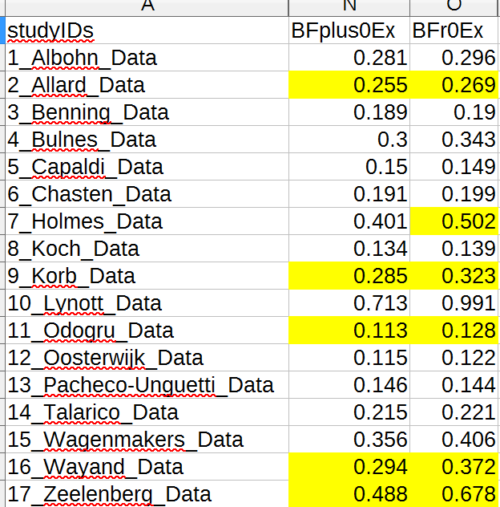

JASP~操作像SPSS的程序可重製統計開源軟體

趁著這陣子台灣最高學府的學術醜聞細節不斷浮出，許多經常使用統計軟體分析資料的人士多少會回憶使用套裝統計軟體的痛苦經驗。像是都用SPSS，分析同一份資料，為什麼學長姐能跑出顯著結果，我怎麼調都做不出相同的結果。如果你有類似的際遇，就值得認識這套開源統計軟體JASP，並且試著今天就開始更新手上的統計工具。
JASP的開發團隊
JASP是由荷蘭阿姆斯特丹大學心理學系教授Eric-Jan Wagenmakers(以下簡稱EJ)主持的實驗室，以及長期合作的程式設計師一起開發與更新。EJ研究貝式統計學的應用多年，2014年出版為認知科學研究而寫的教學書藉Bayesian Cognitive Modeling，也開始JASP的開發以及每年定期舉辦工作坊。JASP的核心是R套件BayesFactor，由Richard Morey等三位計量心理學者為讓R使用者能簡易計算貝式因子(Bayes Factor)而開發，所以JASP從一開始就走開源之道。Richard Morey也是JASP開發團隊核心成員，也和EJ一起擔任工作坊講師。 因為核心成員是貝式統計的專家，JASP不僅能做傳統的統計，簡單實驗的貝式統計，如比較兩組平均數的貝式因子，都可以用JASP計算，並且操作方式與SPSS一樣，所以就算你還不明白貝氏因子，甚至也不甚了解貝式定理，也可以用手上資料計算貝式因子。EJ已公佈工作坊教材，有心的讀者可運用。本文採用EJ今年的代表作，臉部回饋表情假設經典實驗的再現研究，做個初步示範與說明。
入門影片示範
JASP的下載與安裝與一般開源軟體完全相同，有windows，Mac與Linux三種平台版本。有意使用的讀者可以從官網下載適合個人作業系統的版本。如何開始第一次使用，官網有工程師的youtube示範影片，雖然現在的版本0.8.0.0比示範影片的新，但是操作都是相同的，最新版可做初階因素分析，所以有問卷資料要分析的讀者可以試試看。 注得一提的是輸出結果檔能上傳OSF，可以直接在專案網頁瀏覽，而且其它使用者下載結果檔，用自已的JASP打開後，可以檢視及調整原作者的軟體設定。細節可參考官網影片示範。如此一來，實驗室的學長姐畢業後，能無痛交接給學弟妹了。
使用示範：重製Strack RRR
我曾在之前的文章介紹臉部回饋表情假設的再現研究，EJ是這項研究的總主持人，也負責主要的分析工作。實驗設計細節請參考前文，我以此研究為例，簡單介紹貝式因子的計算與解讀方法。
貝式因子簡介
貝式因子是一筆資料在兩個機率分配之內的似然性比值(likelihood ratio)。這兩個機率分配就是進行假設檢定時，分別代表虛無假設(\(H_0\))與對立假設(\(H_1\))的機率分配，似然性指一筆資料在某個假設為真的情況，支持這項假設的証據強度。如果對於似然性尚未有足夠的認識，可當作兩種似然性數值對應假設檢定的p值與考驗力。
兩個似然性相除表示這項證據支持一種假設的強度是支持另一種假設的多少倍。以虛無假設的似然性除以對立假設的似然性，得到的貝氏因子通常寫成\(BF_{01}=\frac{P(D \mid H_0)}{P(D \mid H_1)}\)；以對立假設的似然性除以虛無假設的似然性，得到的貝氏因子通常寫成\(BF_{10}=\frac{P(D \mid H_1)}{P(D \mid H_0)}\)。研究者要報告那一種貝氏因子，可根據這次研究看中那種假設應該得到研究結果的支持。通常原創研究會報告\(BF_{01}\)，根據之前的研結果或認定存在某種效果，都會以\(BF_{10}\)進行推論。
統計學者Kass與Raftery在1995年提出貝式因子數值的強度分界：貝氏因子至少大於1，代表位於分子的假設與位於分母的假設有起碼的差異；貝氏因子大於3，代表手上的證據正面支持位於分子的假設；貝氏因子大於20，手上證據強烈支持位於分子的假設；到了大於150，可以說沒有反證能推翻位於分子的假設。
以直接再現研究來說，已有支持臉部肌肉回饋假說的原始研究結果，自然有興趣知道再現結果的\(BF_{10}\)會不會至少大於1。此外，根據貝式定理，計算貝式因子或似然性數值需要先得知假設的先驗機率，也就是不論有無證據，假設認定的效果確實存在的機率分配。傳統的統計方法不會處理這一塊，我規畫撰寫一篇較深入的文章介紹，現在讀者只要知道JASP給了一個方便法門–預設先驗機率(default prior)。因為也是兩個假設的比值，又可稱先驗機率賠率。好比一場賽馬比賽，有兩匹初次上場的賽馬，沒有人知道那匹馬會勝出，只能由馬匹的出身背景先做推估，下注者就得到誰勝誰負的賠率。EJ在2012年發表的論文，主張預設先驗機率賠率可設為0.707，這也是打開JASP的貝氏統計程序，會看到的預設值。
臉部肌肉回饋假說的實驗，就像「牙齒組評分高於嘴唇組評分」與「牙齒組評分等於嘴唇組評分」兩個可能結果，在一間實驗室裡同場較量。0.707代表未做實驗之前，對前者的看好度是後者的0.707倍，貝式因子表示完成實驗之後，這間實驗室判定前者真正勝過或負於後者的比例。所以貝式因子至少大於1，表示「牙齒組評分高於嘴唇組評分」確實比「牙齒組評分等於嘴唇組評分」早一點點抵達終點線。17個實驗室的貝式因子都沒有大於1，表示臉部肌肉回饋假說看好的結果都沒有真正勝過沒有差異的結果。
取用重製成果
臉部肌肉回饋假說再現研究的所有資料，已公開於OSF專案，論文的表2記綠所有17個實驗室結果的貝氏因子。產生論文中所有圖表的原始資料與分析腳本壓縮檔下載後，可重製論文中的所有圖表。不過我發現重製出來的貝氏因子和論文表2有些出入，可比較下圖與原始表格：

為何自已跑出來的結果有些許不同，我會去信向EJ詢問。但是讀者們可以像我一樣，用JASP重製單側假設檢定的貝氏因子，只要下載我的jasp檔，了解我的重製方法。
經由可重製分析流程學習與使用統計
由於原始實驗室曾發生「牙齒組評分高於嘴唇組評分」勝出的事實，所以EJ在這次再現研究嘗試一種為評估再現研究信效度而開發的貝式因子，在2014年發表的論文，提到以原始研究的統計值為種子，取得逼近合理先驗機率賠率的方法。這套演算方法尚未收錄於任何套件，所以現版本的JASP未能重製。然而論文表2顯示，只有Zeelenberg的實驗室出現「牙齒組評分高於嘴唇組評分」稍微勝出的結果。上圖的再製表格卻無法再現相同的分析結果。
透過這次重製經驗，即使我未能完全了解論文中的公式推導，卻能從公開的程式碼，了解這套演算方法的邏輯。相信有心提昇個人統計功力的讀者，也能透過這樣的方式學習觀念與工具。
本文隨JASP重要升級持續更新
JASP 1.0還未正式推出，未來更新有何變化尚未可知，因此本文內容如果因為將來的更新而有改變，會進行相對的更新與修正。有興趣學習的JASP與貝式統計的讀者，可以到EJ常駐的網路論壇提問，與EJ及其它高手直接交流。